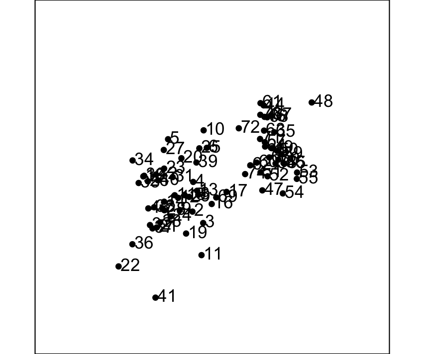
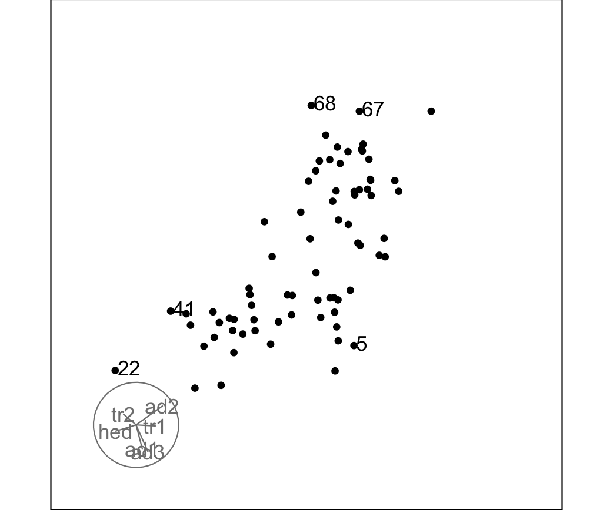
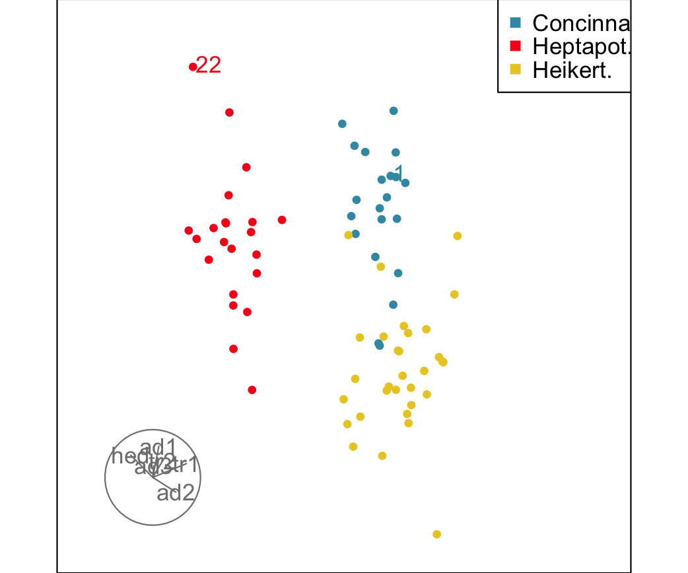

vignettes/labelling-observations.Rmd
labelling-observations.RmdLabels can be added to individual observations in
animate_xy via the obs_labels argument of
display_xy. This is useful when you want to track specific
points — outliers, known cases of interest, or a named subset — as they
move through the tour.
Pass a character vector of the same length as the number of rows in your data. Each element is the label that will be drawn next to the corresponding point. Turning axes off keeps the plot uncluttered when labels are present.
animate_xy(flea[,1:6],
obs_labels = as.character(1:nrow(flea)),
axes = "off"
)Row numbers make a reasonable default label because they let you trace a point back to a specific row of your data frame.

Labelling every point can become hard to read in larger datasets. To
label only a subset, supply an empty string "" for the
observations you want to leave unlabelled. Only the non-empty strings
are drawn.
Here we label just the five most extreme outliers, identified in advance by their Mahalanobis distance:
# Find the five points furthest from the multivariate centre
d2 <- mahalanobis(flea[,1:6], colMeans(flea[,1:6]), cov(flea[,1:6]))
top5 <- order(d2, decreasing = TRUE)[1:5]
# Build a label vector: empty for most points, row number for the top 5
lbls <- rep("", nrow(flea))
lbls[top5] <- as.character(top5)
animate_xy(flea[,1:6], obs_labels = lbls, axes="bottomleft")
Labels and the col argument work independently, so you
can colour by group while still labelling individual points. A common
workflow is to colour all observations by a grouping variable and then
label only the few points you want to call out by name.
# Colour by species; label only row 1 and row 22 (arbitrary examples)
lbls <- rep("", nrow(flea))
lbls[c(1, 22)] <- rownames(flea)[c(1, 22)]
animate_xy(flea[,1:6],
col = flea$species,
obs_labels = lbls,
axes = "bottomleft"
)
Interactive use is fine for exploration, but if you want to share a
labelled tour you can render it to a GIF with render_gif.
The frames argument controls how many frames are captured
before the file is written; width and height
are in pixels.
lbls <- rep("", nrow(f))
lbls[c(1, 22)] <- rownames(flea)[c(1, 22)]
render_gif(
flea[,1:6],
tour_path = grand_tour(),
display = display_xy(
col = flea$species,
obs_labels = labs,
axes = "bottomleft"
),
gif_file = "labelled_tour.gif",
frames = 60,
width = 400,
height = 400
)Labels are drawn by the underlying call to text() in
base graphics, positioned directly at each point’s projected
coordinates. In dense regions of a projection labels will overlap, which
is expected — as the tour rotates, points separate and the labels become
readable in turn. If overlap is a persistent problem, consider labelling
a smaller subset or reducing cex via the ...
passthrough:
animate_xy(flea[,1:6],
obs_labels = as.character(1:nrow(f)),
axes = "off",
cex = 0.6
)